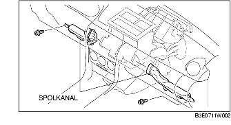

DEMONTERING/MONTERING AV LUFTKONDITIONERINGSENHETEN
B3E071161130W01
1. Lossa batteriets minuskabel.
2. Töm ut kylmedlet. (Se LADDNING AV KYLMEDEL.)
3. Tappa ur kylvätskan. (Se BYTE AV KYLVÄTSKA.)
4. Koppla ur från luftkonditioneringsenheten i den ordning som tabellen visar.
-
Försiktigt
-
• Om fukt eller främmande material kommer in i kylkretsen kommer kylförmågan att minska och onormalt ljud att uppkomma. Även andra fel kan uppstå. Plugga alltid igen öppna kopplingar efter att någon av kylmedelskomponenterna tagits bort.
|
1
|
Kylarslang (LO)
|
|
2
|
Kylarrör
|
|
3
|
Värmarslang
|
5. Demontera följande delar:
-
(1) Framdörrar (Se DEMONTERING/MONTERING AV FRAMDÖRR.)
-
(2) Askfatspanel (Se DEMONTERING/MONTERING AV KONSOL.)
-
(3) Konsol (Se DEMONTERING/MONTERING AV KONSOL.)
-
(4) Växelväljarkomponent (MTX) (Se DEMONTERING/MONTERING AV VÄXLINGSMEKANISMEN.)
-
(5) Växelväljarkomponent (ATX) (Se DEMONTERING/MONTERING AV VÄXELVÄLJARE.)
-
(6) Dekorationspanel (Se DEMONTERING/MONTERING AV DEKORATIONSPANEL.)
-
(7) Tröskelplåt fram (Se DEMONTERING/MONTERING AV FRÄMRE TRÖSKELPLÅT.)
-
(8) Främre sidobeklädnad (Se DEMONTERING/MONTERING AV FRÄMRE SIDOBEKLÄDNAD.)
-
(9) Handskfack (Se DEMONTERING/MONTERING AV HANDSKFACK.)
-
(10) Spolkanaler (vänster, höger)

-
(11) PJB (Se DEMONTERING/MONTERING AV PASSAGERARSIDANS KOPPLINGSBOX (PJB).)
-
(12) Nedre panel (Se DEMONTERING/MONTERING NEDRE PANEL.)
-
(13) Rattstångskåpa (Se DEMONTERING/MONTERING RATTSTÅNGSKÅPA.)
-
(14) Rattstång (Se DEMONTERING/MONTERING AV RATT OCH RATTSTÅNG.)
-
(15) A-stolpens beklädnad (Se DEMONTERING/MONTERING AV A-STOLPENS BEKLÄDNAD.)
-
(16) Mittpanelmodul (Se DEMONTERING/MONTERING AV MITTPANELMODUL)
-
(17) Vindrutetorkarens arm och blad (Se DEMONTERING/MONTERING AV VINDRUTETORKARNAS ARM OCH TORKARBLAD.)
-
(18) Torpedplåtens grill (Se DEMONTERING/MONTERING AV TORPEDPLÅTENS GRILL.)
-
(19) Torpedplåt (Se DEMONTERING/MONTERING AV TORPEDPLÅTEN.)
-
(20) Vindrutetorkarmotor (Se DEMONTERING/MONTERING AV VINDRUTETORKARMOTOR.)
6. Ta loss luftkonditioneringsenhetens fästmutter ur motorrummet, och demontera sedan luftkonditioneringsenheten.
-
Försiktigt
-
• Om fukt eller främmande material kommer in i kylkretsen kommer kylförmågan att minska och onormalt ljud att uppkomma. Även andra fel kan uppstå. Plugga alltid igen öppna kopplingar efter att någon av kylmedelskomponenterna tagits bort.
7. Ta bort den bakre värmekanalen.
8. Koppla ur avtappningsslangen som är ansluten till luftkonditioneringsenheten.
9. Lossa skruvarna och muttrarna som fäster instrumentpanelen vid karossen.
10. Demontera instrumentpanelen med luftkonditioneringsenheten. (Se DEMONTERING/MONTERING AV INSTRUMENTPANEL.)
11. Koppla ur luftblandningsvajern från luftblandningslänken och vajerklämman. (Manuell luftkonditionering)
12. Koppla ur luftriktarvajern från luftriktarhjulet och vajerklämman. (Manuell luftkonditionering)
13. Koppla loss följande kontakter:
-
- Kontakt för fläktmotor
-
- Kontakt för effekttransistor MOS FET (helautomatisk luftkonditionering)
-
- Kontakt till givare för förångningstemperatur
-
- Kontakt, luftintagsreglage
-
- Kontakt till manöverdon för luftblandning (helautomatisk luftkonditionering)
-
- Kontakt till manöverdon för luftflöde (helautomatisk luftkonditionering)
-
- Resistorkontakt (Manuell luftkonditionering)
14. Ta bort höljet över värmeelementet.
15. Demontera skruvarna och muttrarna som fäster luftkonditioneringsenheten vid karossen.
Observera vid montering av luftkonditioneringsenhet
1. Vid byte av luftkonditioneringsenheten eller förångaren, fyll på kompressorolja i kylmedelssystemet.
-
Påfyllningsmängd olja (ungefärlig volym)
-
25 ml {25 cc, 0,8 fl oz}